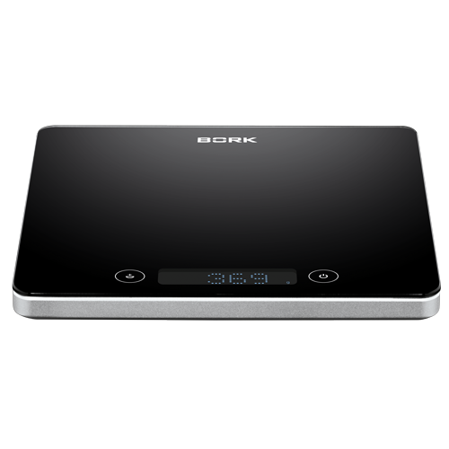
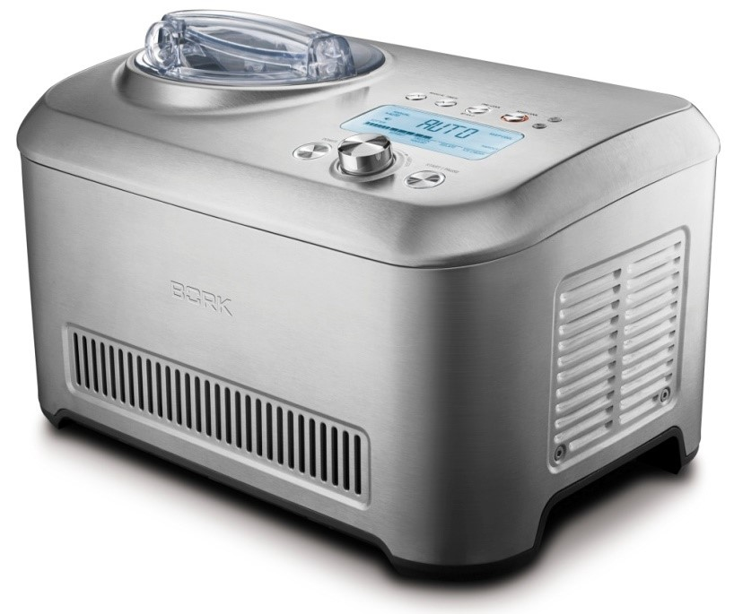
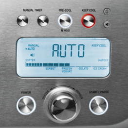
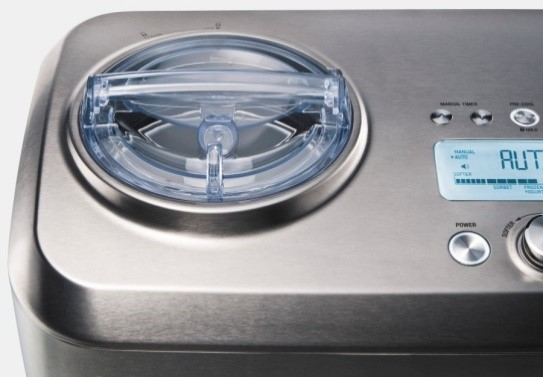
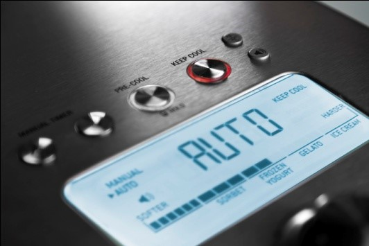
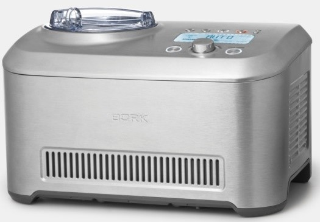
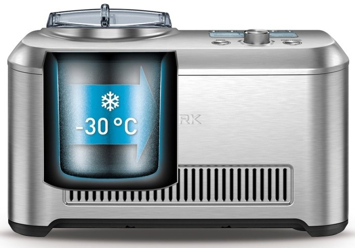
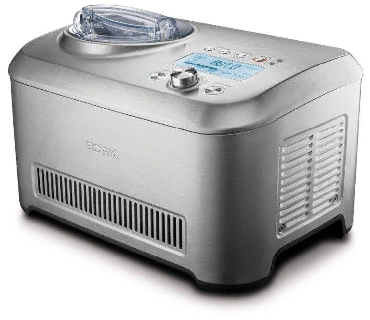

Автоматическая мороженица BORK E801
Автоматические мороженицы оснащены всеми нужными для приготовления мороженого узлами и агрегатами.
Автоматические мороженицы практически ни чем не отличаются от машин производственного уровня.
В них есть собственная холодильная система с компрессором работающем на хладагенте.
Также, автоматические мороженицы способны смешивать смеси, одновременно охлаждая их. Особое удобство в приготовлении различных холодных десертов дают встроенные автоматические программы, которые всегда сориентируют пользователя.
BORK E801
Технические характеристики
Напряжение: 220–240 В
Частота: 50 Гц
Потребляемая мощность: 170–200 Вт
Вес: 13,6 кг
Размеры: ш40*в26*г27
Комплектация
Мороженица: 1 шт.
Ведерко для мороженого: 1 шт.
Щетка для чистки лопасти и ведерка: 1 шт.
Лопатка для очистки стенок ведерка: 1 шт.
Руководство по эксплуатации
с гарантийным талоном: 1 шт.

Максимальный объем ведерка составляет 1350 мл.
Максимальное количество продукта на выходе 1 литр.
Мороженица оснащена собственной холодильной системой и компрессором, способным быстро охлаждать до минусовых температур в считанные минуты.
- воздушное охлаждение
- индукционный двигатель
- тепловая защита системы охлаждения и взбивания
Управление
Мороженица BORK Е801 оснащена электронным управлением с регулятором шатл. В управлении учтены все три канала восприятия.
- Тактильный
- Визуальный
- Аудиальный
Мороженица оснащена большим информативным дисплеем.
Возможности
Добавление ингредиентов в процессе приготовления
Во время работы прибора вы можете легко добавить дополнительные ингредиенты: шоколадную крошку, свежие фрукты, орехи, варенье, джем или сок для получения неповторимого вкуса вашего мороженого. Мороженица подскажет вам при помощи звукового сигнала, когда добавлять ингредиенты.
Функция предварительного охлаждения PRE-COOL
Дает возможность предварительно охладить мороженицу до -10…-30 °C и подготовить прибор к работе.
Автоматические режимы
Мороженица BORK E801 имеет четыре автоматических режима: сорбет, замороженный йогурт, джелато и мороженое.
Ручной режим
С помощью ручного режима вы можете сами контролировать время приготовления мороженого по вашим индивидуальным рецептам.
Функция KEEP COOL
Поддерживает мороженицу в охлажденном состоянии и предотвращает таяние десерта.
Предварительное охлаждение
Функция PRE-COOL позволяет охладить камеру мороженицы, чтобы сократить время приготовления десерта.
Эту функцию использовать необязательно, но она является идеальным средством при подготовке основы мороженого перед приготовлением.
Для выбора функции предварительного охлаждения нажмите кнопку PRE-COOL.
Включение режима предварительного охлаждения PRE-COOL обозначается сменой цвета подсветки вокруг этой кнопки с белого на красный.
Этот режим позволяет охладить мороженицу до –10…–30 °C, что занимает 5–10 минут. Когда мороженица достигнет оптимальной температуры, на дисплее загорается индикатор READY («готово») и выводится мигающее сообщение PRESS START («нажать пуск»).
Приготовление охлажденного десерта не начнется до тех пор, пока не будет нажата кнопка START / PAUSE. Если процесс приготовления десерта не запущен, то лопасть автоматически начнет вращаться через 15 минут для поддержания предварительного охлаждения.
При использовании этой функции на экран дисплея выводится текущая температура и горит индикатор PRE-COOLING, на котором отображается динамика процесса, что позволяет судить о том, что мороженица находится в режиме предварительного охлаждения.
Предварительное охлаждение прекращается автоматически через 20 минут или в любой момент вручную: повторным нажатием кнопки PRE-COOL или кнопки START / PAUSE, после чего мороженица возвращается в режим ожидания. По окончании предварительного охлаждения необходимо нажать на кнопку START / PAUSE, чтобы начать процесс приготовления мороженого.
Автоматический режим
Нажмите на кнопку POWER для включения прибора. При этом загорается белая подсветка кнопки POWER, а на экране дисплея — индикатор AUTO. Кроме того, включается подсветка индикатора динамики процесса и панели выбора твердости. Стрелка на экране дисплея напротив индикатора AUTO указывает, что мороженица работает в автоматическом режиме. Чтобы убедиться в этом, поверните регулятор настройки твердости влево или вправо.
Для выбора желаемой твердости необходимо повернуть регулятор настройки влево или вправо. При повороте регулятора настройки влево можно выбрать более мягкие десерты, например, сорбет, а при повороте вправо — более твердые десерты, например, мороженое.
12 степеней заморозки
Мороженица оснащена плавной регулировкой степени заморозки. Выбор степени заморозки осуществляется с помощью регулятора шатл.
Ручной режим
Для того чтобы перевести мороженицу в ручной режим, необходимо нажать на кнопки ручной установки таймера. При этом на дисплей будет выведено время, а на экране с левой стороны напротив индикатора MANUAL должен загореться стрелочный указатель.
Шаг установки таймера 5 мин.
Диапазон времени работы таймера: от 5 до 180 мин.
В среднем, для приготовления и замораживания мороженого требуется от 25 до 50 минут.
- Вставьте ведерко с лопастью в морозильную камеру.
- Добавьте ингредиенты.
- Нажмите кнопку START /PAUSE для начала процесса приготовления мороженого. При этом вокруг данной кнопки должна загореться подсветка красного цвета, сигнализируя о включении прибора и начале процесса приготовления мороженого.
- Когда заданное время будет достигнуто, компрессор и приводной двигатель остановятся, и на дисплее появится сообщение READY («готово»).
- Если во время цикла нажать на кнопку START / PAUSE, в процессе наступит пауза. Для возобновления процесса приготовления необходимо нажать эту кнопку повторно.
- Если требуется выполнить сброс таймера, нажмите и удерживайте кнопку START / PAUSE в течение 2 секунд.
- Таймер можно настраивать в любой момент работы прибора.
Режим поддержания охлажденного состояния KEEP COOL
- Функция KEEP COOL поддерживает замороженный десерт в холодном, взбитом состоянии в общей сложности в течение 3 часов.
- При выборе этой функции вокруг кнопки KEEP COOL загорается подсветка красного цвета, а на экране дисплея — индикатор KEEP COOL.
- Во время работы этой функции производится взбивание смеси до выбранной твердости, и по достижении требуемой консистенции компрессор переходит в импульсный режим, с периодическим включением лопасти для поддержания заданной консистенции мороженого.
- Лопасть будет включаться только в том случае, если мороженица определит, что десерт подтаял и не соответствует выбранной консистенции. Функцию поддержания охлажденного состояния KEEP COOL можно включать и выключать в любой момент работы прибора.
Функция регулирования громкости звукового сигнала
Мороженица оборудована звуковым/музыкальным сигналом, оповещающим о готовности замороженного десерта. Громкость сигнала имеет следующие режимы настройки: музыкальный, тихий, громкий и беззвучный.
- Нажмите кнопку, (звук) чтобы выбрать требуемый режим.
Единицы измерения температуры
Мороженица оснащена функцией отображения температуры и переключения единиц измерения температуры.
- Нажмите кнопку (t) один раз для вывода на дисплей показателя температурного режима и нажмите ее повторно для изменения единиц измерения с градусов Цельсия на градусы Фаренгейта и обратно.
Сброс к заводским настройкам
- Чтобы восстановить заводские настройки прибора, нажмите и удерживайте кнопку KEEP COOL в течение 5 секунд. Это допускается делать только в режиме ожидания.
Замок от детей
Мороженица BORK E801 оснащена режимом блокировки прибора для безопасности ваших детей.
- Чтобы воспользоваться данной функцией, нажмите и удерживайте кнопку HOLD в течение 2 секунд для установки/снятия блокировки.
Дополнительно:
Охлаждающая система мороженицы оснащена компрессом и холодильным контуром. Рабочий хладагент устройства R 134A.
Для эффективного оттока воздуха и вентиляции рекомендуется оставлять свободное пространство между мороженицей и ближайшей твердой поверхностью не менее 15 см.